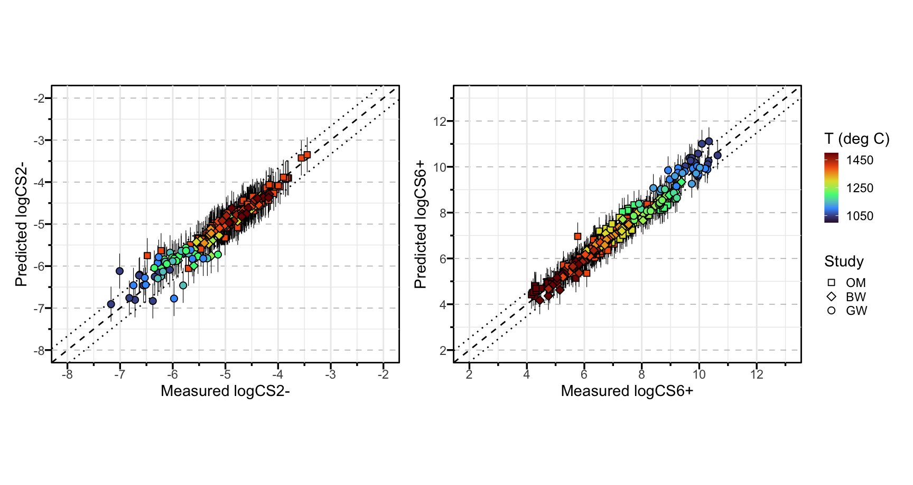
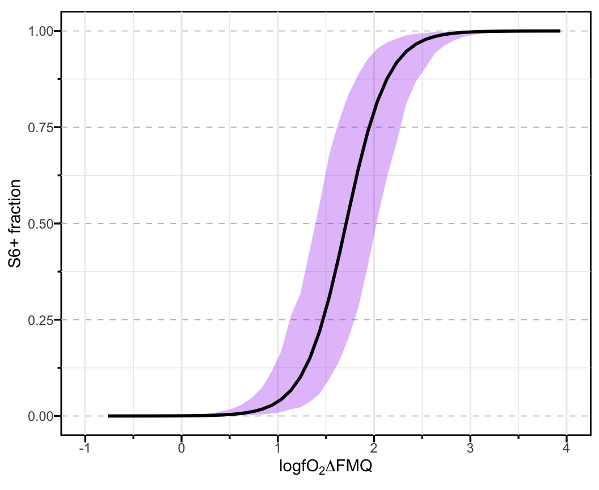

Code
install.packages(c(
"readxl",
"glmnet",
"tibble",
"ggplot2",
"dplyr",
"patchwork",
"ggprism",
"scales"
))Supplementary notebook for Gorojovsky and Wood (2026)
This notebook accompanies the supplementary R project for:
Gorojovsky, L. R. and Wood, B. J. (2026). Solubility and speciation of sulfur in silicate melts under crustal conditions. Earth and Planetary Science Letters.
It reproduces the LASSO regression workflow used to fit sulfide and sulfate capacity models, estimate prediction intervals, and propagate uncertainty into an example sulfur-speciation calculation. The standalone R script, S2_LASSO_regression.R, remains the canonical script version of the same workflow.
Install the required packages before running the notebook. Most packages are available from CRAN:
install.packages(c(
"readxl",
"glmnet",
"tibble",
"ggplot2",
"dplyr",
"patchwork",
"ggprism",
"scales"
))The conformalInference package is installed from GitHub:
if (!requireNamespace("devtools", quietly = TRUE)) {
install.packages("devtools")
}
devtools::install_github("ryantibs/conformal", subdir = "conformalInference")Load the packages used in the analysis.
required_packages <- c(
"readxl",
"glmnet",
"tibble",
"ggplot2",
"dplyr",
"patchwork",
"ggprism",
"scales",
"conformalInference"
)
missing_packages <- required_packages[
!vapply(required_packages, requireNamespace, logical(1), quietly = TRUE)
]
if (length(missing_packages) > 0) {
stop(
"Install the following package(s) before running this notebook: ",
paste(missing_packages, collapse = ", ")
)
}
invisible(lapply(required_packages, library, character.only = TRUE))Loading required package: MatrixLoaded glmnet 4.1-10
Attaching package: 'dplyr'The following objects are masked from 'package:stats':
filter, lagThe following objects are masked from 'package:base':
intersect, setdiff, setequal, unionThe calibration data are read from S1_Calibration_data_and_fitting_results.xlsx. The fitted model form is:
logCS = A0 + B/T + sum(XA/T)
calibration_workbook <- "S1_Calibration_data_and_fitting_results.xlsx"
if (!file.exists(calibration_workbook)) {
stop("Could not find ", calibration_workbook, " in the project directory.")
}
df_S6 <- read_excel(
calibration_workbook,
sheet = "S2_logCS6_data_for_fitting",
skip = 1
)
df_S2 <- read_excel(
calibration_workbook,
sheet = "S1_logCS2_data_for_fitting",
skip = 1
)
tibble(
dataset = c("Sulfate capacity, logCS6+", "Sulfide capacity, logCS2-"),
rows = c(nrow(df_S6), nrow(df_S2)),
columns = c(ncol(df_S6), ncol(df_S2))
)Build the design matrices used by glmnet. The Study and T columns are excluded from the model matrices.
x1 <- model.matrix(logCS6 ~ . - 1 - Study - T, df_S6)
y1 <- df_S6$logCS6
x2 <- model.matrix(logCS2 ~ . - 1 - Study - T, df_S2)
y2 <- df_S2$logCS2
tibble(
model = c("logCS6+", "logCS2-"),
observations = c(nrow(x1), nrow(x2)),
predictors = c(ncol(x1), ncol(x2))
)The models are fit with LASSO regression using glmnet. Repeated Monte Carlo cross-validation summarizes the selected lambda.1se value and the distribution of selected coefficients.
The publication workflow uses B_reps <- 100 and nfolds <- 20. For a quick local smoke test, reduce B_reps, then restore it before reproducing the supplementary results.
set.seed(80085)
B_reps <- 100
nfolds <- 20
run_mc_cv <- function(x, y, B = 100, nfolds = 20) {
lambda_1se_vals <- numeric(B)
rmse_1se_vals <- numeric(B)
coeff_list <- vector("list", B)
for (b in seq_len(B)) {
cv <- cv.glmnet(x, y, alpha = 1, nfolds = nfolds, type.measure = "mse")
lambda_1se_vals[b] <- cv$lambda.1se
rmse_1se_vals[b] <- sqrt(cv$cvm[cv$index["1se", 1]])
beta_1se <- coef(cv, s = "lambda.1se")
coeff_list[[b]] <- tibble(
term = beta_1se@Dimnames[[1]][beta_1se@i + 1],
value = beta_1se@x
)
}
coef_tbl <- bind_rows(coeff_list, .id = "iter") |>
group_by(term) |>
summarise(
mean = mean(value),
sd = sd(value),
n_non0 = n(),
.groups = "drop"
) |>
mutate(select_freq = n_non0 / B)
list(
lambda_1se_mean = mean(lambda_1se_vals),
lambda_1se_sd = sd(lambda_1se_vals),
rmse_1se_mean = mean(rmse_1se_vals),
coef_tbl = coef_tbl
)
}
cv_S6 <- run_mc_cv(x1, y1, B = B_reps, nfolds = nfolds)
cv_S2 <- run_mc_cv(x2, y2, B = B_reps, nfolds = nfolds)
cv_summary <- tibble(
model = c("Sulfate capacity, logCS6+", "Sulfide capacity, logCS2-"),
lambda_1se_mean = c(cv_S6$lambda_1se_mean, cv_S2$lambda_1se_mean),
lambda_1se_sd = c(cv_S6$lambda_1se_sd, cv_S2$lambda_1se_sd),
mean_rmse = c(cv_S6$rmse_1se_mean, cv_S2$rmse_1se_mean)
)
cv_summaryCoefficient selection summaries from the repeated cross-validation.
cv_S6$coef_tbl |>
arrange(desc(select_freq), term)cv_S2$coef_tbl |>
arrange(desc(select_freq), term)The final models are fit on all calibration data using the mean lambda.1se values from the repeated cross-validation.
fit_S6 <- glmnet(x1, y1, alpha = 1, lambda = cv_S6$lambda_1se_mean)
beta_S6 <- as.matrix(coef(fit_S6))
beta_S6_sparse <- beta_S6[beta_S6[, 1] != 0, , drop = FALSE]
fit_S2 <- glmnet(x2, y2, alpha = 1, lambda = cv_S2$lambda_1se_mean)
beta_S2 <- as.matrix(coef(fit_S2))
beta_S2_sparse <- beta_S2[beta_S2[, 1] != 0, , drop = FALSE]
as_tibble(beta_S6_sparse, rownames = "term") |>
rename(coefficient = s0)as_tibble(beta_S2_sparse, rownames = "term") |>
rename(coefficient = s0)Split-conformal prediction is used to estimate 95% prediction intervals with the LASSO penalty fixed from the repeated cross-validation.
train_S6 <- function(x, y) {
glmnet(
x,
y,
alpha = 1,
lambda = cv_S6$lambda_1se_mean,
standardize = TRUE
)
}
predict_S6 <- function(fit, newx) {
as.numeric(predict(fit, newx, s = cv_S6$lambda_1se_mean))
}
conf_S6 <- conformal.pred.split(
x = x1,
y = y1,
x0 = x1,
train.fun = train_S6,
predict.fun = predict_S6,
alpha = 0.05
)
pred_S6 <- df_S6 |>
mutate(pred = conf_S6$pred, lo95 = conf_S6$lo, hi95 = conf_S6$up)train_S2 <- function(x, y) {
glmnet(
x,
y,
alpha = 1,
lambda = cv_S2$lambda_1se_mean,
standardize = TRUE
)
}
predict_S2 <- function(fit, newx) {
as.numeric(predict(fit, newx, s = cv_S2$lambda_1se_mean))
}
conf_S2 <- conformal.pred.split(
x = x2,
y = y2,
x0 = x2,
train.fun = train_S2,
predict.fun = predict_S2,
alpha = 0.05
)
pred_S2 <- df_S2 |>
mutate(pred = conf_S2$pred, lo95 = conf_S2$lo, hi95 = conf_S2$up)The following plot reproduces the measured-vs-predicted comparison for the sulfide and sulfate capacity models.
study_levels <- c("OM", "BW", "GW")
temp_range <- c(1000, 1500)
common_fill <- scale_fill_viridis_c(
option = "turbo",
name = "T (deg C)",
limits = temp_range,
breaks = seq(1050, 2100, 200),
oob = scales::squish
)
res_S6 <- pred_S6$logCS6 - pred_S6$pred
rmse_S6 <- sqrt(mean(res_S6^2))
delta_S6 <- 1.96 * rmse_S6
pred_S6 <- pred_S6 |>
arrange(factor(Study, levels = study_levels)) |>
mutate(Study = factor(Study, levels = study_levels))
pS6 <- ggplot(pred_S6, aes(x = logCS6, y = pred, shape = Study, fill = T - 273)) +
geom_abline(slope = 1, intercept = 0, linetype = "dashed") +
geom_abline(slope = 1, intercept = delta_S6, linetype = "dotted") +
geom_abline(slope = 1, intercept = -delta_S6, linetype = "dotted") +
geom_errorbar(aes(ymin = lo95, ymax = hi95), width = 0, linewidth = 0.2) +
geom_point(size = 2) +
scale_shape_manual(values = c(22, 23, 21)) +
common_fill +
labs(x = "Measured logCS6+", y = "Predicted logCS6+") +
coord_cartesian(clip = "off") +
annotation_ticks(sides = "bl", type = "both", outside = TRUE) +
scale_x_continuous(limits = c(2, 13), breaks = seq(2, 13, by = 2)) +
scale_y_continuous(limits = c(2, 13), breaks = seq(2, 13, by = 2)) +
theme_minimal() +
theme(
legend.key.size = unit(10, "point"),
aspect.ratio = 0.8,
panel.grid.major.y = element_line(color = "grey", linewidth = 0.3, linetype = 2),
panel.background = element_rect(colour = "black", fill = NA)
)
res_S2 <- pred_S2$logCS2 - pred_S2$pred
rmse_S2 <- sqrt(mean(res_S2^2))
delta_S2 <- 1.96 * rmse_S2
pred_S2 <- pred_S2 |>
arrange(factor(Study, levels = study_levels)) |>
mutate(Study = factor(Study, levels = study_levels))
pS2 <- ggplot(pred_S2, aes(x = logCS2, y = pred, shape = Study, fill = T - 273)) +
geom_errorbar(aes(ymin = lo95, ymax = hi95), width = 0, linewidth = 0.2) +
geom_abline(slope = 1, intercept = 0, linetype = "dashed") +
geom_abline(slope = 1, intercept = delta_S2, linetype = "dotted") +
geom_abline(slope = 1, intercept = -delta_S2, linetype = "dotted") +
geom_point(size = 2) +
scale_shape_manual(values = c(22, 23, 21)) +
common_fill +
labs(x = "Measured logCS2-", y = "Predicted logCS2-") +
coord_cartesian(clip = "off") +
annotation_ticks(sides = "bl", type = "both", outside = TRUE) +
scale_x_continuous(limits = c(-8, -2), breaks = seq(-8, -2, by = 1)) +
scale_y_continuous(limits = c(-8, -2), breaks = seq(-8, -2, by = 1)) +
theme_minimal() +
theme(
legend.position = "none",
aspect.ratio = 0.8,
panel.grid.major.y = element_line(color = "grey", linewidth = 0.3, linetype = 2),
panel.background = element_rect(colour = "black", fill = NA)
)
pS2 + pS6 + plot_layout(ncol = 2)
This section propagates uncertainty in logCS6+, logCS2-, and logfO2 into an example S6+/Stot calculation. The input values below are an example and should be modified for other compositions or conditions.
mu6 <- 10.824
mu2 <- -6.226
se6 <- 0.55 / 1.96
se2 <- 0.35 / 1.96
se_fO2 <- 0.01
set.seed(80085)
R <- 50000
draw6 <- rnorm(R, mu6, se6)
draw2 <- rnorm(R, mu2, se2)
fO2_vec <- seq(-11, -5, by = 0.1)
out <- lapply(fO2_vec, function(lgfO2) {
L_draw <- draw6 - draw2 + 2 * (lgfO2 + rnorm(1, 0, se_fO2))
frac <- 1 - 1 / (1 + 10^L_draw)
tibble(
point = 1 - 1 / (1 + 10^(mu6 - mu2 + 2 * lgfO2)),
lo95 = quantile(frac, 0.025),
hi95 = quantile(frac, 0.975)
)
})
grid_df <- bind_rows(out) |>
mutate(logfO2 = fO2_vec)
ggplot(grid_df, aes(x = logfO2 - (-25096.3 / 1323 + 8.735), y = point)) +
geom_ribbon(aes(ymin = lo95, ymax = hi95), fill = "purple", alpha = 0.3) +
geom_line(linewidth = 1) +
coord_cartesian(clip = "off") +
annotation_ticks(sides = "bl", type = "both", outside = TRUE) +
scale_x_continuous(limits = c(-1, 4), breaks = seq(-1, 4, by = 1)) +
scale_y_continuous(limits = c(0, 1), breaks = seq(0, 1, by = 0.25)) +
labs(x = expression(logfO[2] * Delta * FMQ), y = "S6+ fraction") +
theme_minimal() +
theme(
aspect.ratio = 0.8,
panel.grid.major.y = element_line(color = "grey", linewidth = 0.3, linetype = 2),
panel.background = element_rect(colour = "black", fill = NA)
)Warning: Removed 13 rows containing missing values or values outside the scale range
(`geom_ribbon()`).Warning: Removed 13 rows containing missing values or values outside the scale range
(`geom_line()`).
Record the R and package versions used to run the notebook.
sessionInfo()R version 4.5.2 (2025-10-31)
Platform: aarch64-apple-darwin20
Running under: macOS Sequoia 15.6.1
Matrix products: default
BLAS: /System/Library/Frameworks/Accelerate.framework/Versions/A/Frameworks/vecLib.framework/Versions/A/libBLAS.dylib
LAPACK: /Library/Frameworks/R.framework/Versions/4.5-arm64/Resources/lib/libRlapack.dylib; LAPACK version 3.12.1
locale:
[1] en_US.UTF-8/en_US.UTF-8/en_US.UTF-8/C/en_US.UTF-8/en_US.UTF-8
time zone: Europe/London
tzcode source: internal
attached base packages:
[1] stats graphics grDevices utils datasets methods base
other attached packages:
[1] conformalInference_1.1 scales_1.4.0 ggprism_1.0.7
[4] patchwork_1.3.2 dplyr_1.1.4 ggplot2_4.0.1
[7] tibble_3.3.0 glmnet_4.1-10 Matrix_1.7-4
[10] readxl_1.4.5
loaded via a namespace (and not attached):
[1] gtable_0.3.6 jsonlite_2.0.0 compiler_4.5.2 tidyselect_1.2.1
[5] Rcpp_1.1.0 splines_4.5.2 yaml_2.3.11 fastmap_1.2.0
[9] lattice_0.22-7 R6_2.6.1 generics_0.1.4 shape_1.4.6.1
[13] knitr_1.50 iterators_1.0.14 htmlwidgets_1.6.4 pillar_1.11.1
[17] RColorBrewer_1.1-3 rlang_1.1.6 xfun_0.54 S7_0.2.1
[21] viridisLite_0.4.2 cli_3.6.5 withr_3.0.2 magrittr_2.0.4
[25] digest_0.6.39 foreach_1.5.2 grid_4.5.2 rstudioapi_0.17.1
[29] lifecycle_1.0.4 vctrs_0.6.5 evaluate_1.0.5 glue_1.8.0
[33] farver_2.1.2 cellranger_1.1.0 codetools_0.2-20 survival_3.8-3
[37] rmarkdown_2.30 tools_4.5.2 pkgconfig_2.0.3 htmltools_0.5.9